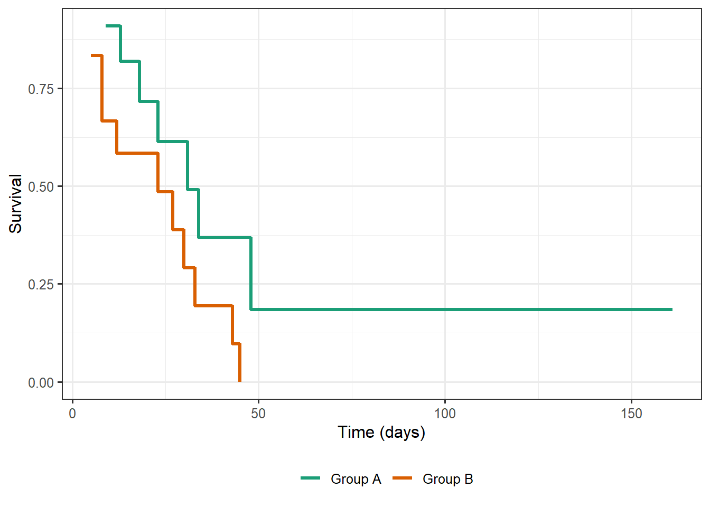

| Years from Baseline | Number at Risk | Number of Deaths | Number Censored |
|---|---|---|---|
| 1 | 146 | 27 | 3 |
| 2 | 116 | 18 | 10 |
| 3 | 88 | 21 | 10 |
| 4 | 57 | 9 | 3 |
| 5 | 45 | 1 | 3 |
| 6 | 41 | 2 | 11 |
| 7 | 28 | 3 | 5 |
| 8 | 20 | 1 | 8 |
| 9 | 11 | 2 | 1 |
| 10 | 8 | 2 | 6 |
24 Basic Estimation and Inference
There are some studies where we are interested in characterizing the overall survival; other studies seek to compare the survival across a small number of groups. In these situations, when the relation between survival and multiple characteristics of the subject is not of primary interest, modeling is not necessary. The methods discussed in this chapter are analogous to computing the sample mean, constructing a boxplot, or conducting a “one-sample t-test” in an introductory class. However, having a grasp of these methods can help us better understand the benefits of modeling that we discuss in the next chapter.
As we have discussed in other settings, there are essentially three approaches to estimation: parametric, semiparametric, and nonparametric. This is true with time-to-event data as well. If we are willing to posit a model for the distribution of the survival times and the censoring times, we could potentially use likelihood methods to estimate the unknown parameters. While more popular among engineering disciplines, the biological sciences prefer semiparametric and nonparametic approaches. The methods discussed in this chapter are nonparametric in nature, while the model discussed in the next chapter is semiparametric.
24.1 Life-Table Methods
In some cohort studies, where a large group is followed over the course of time with periodic “check-ins,” the exact event times are known to fall with key intervals. The origins of survival analysis are steeped in such studies. In such cases, life-table methods are used to characterize survival.
Definition 24.1 (Life Table) Life tables are a method of estimating overall survival over key intervals of time, generally constructed for a single population.
In order to illustrate the considerations in life-table methods, consider the following example.
Example 24.1 (Hypertension, Revisited) A study was conducted to examine the efficacy of a new anti-hypertensive medication. A cohort of 146 patients with a previous history of heart disease were treated and then followed over the next 10 years. The primary event of interest was death. A summary of the data is provided in Table 24.1.
Let’s consider how we should estimate the survival at time \(t = 5\); that is, what proportion of individuals survive past 5 years in the study? Notice that we observe 76 deaths during the first 5 years of follow-up; therefore, an initial guess might be
\[S(5) = 1 - \frac{\text{76 deaths over 5 years}}{\text{146 individuals}} = 0.479.\]
However, this assumes that every subject censored during the study lived the full five years. Remember, we do not know why the 3 subjects who were censored during the first year were lost to follow-up. All we know is that they were alive at the beginning of the study; we do not know if they died during the first year or survived through the end of the study. Assuming that the 29 censored individuals all survived through 5 years is quite optimistic, meaning that our estimate of survival is biased on the high-sided.
In order to correct this optimistic perspective, we might consider removing the censored subjects:
\[S(5) = 1 - \frac{\text{76 deaths over 5 years}}{\text{146 individuals} - \text{29 withdrawn}} = 0.350.\]
This essentially assumes the censored individuals never existed; however, we know that 3 of the subjects, for example, survived at least through the first 4 years. Excluding this information results in a pessimistic estimate, meaning our estimate of survival is biased on the low-side.
While these two extremes were illustrated over a five-year span, the same concerns exist on any single interval. For example, assuming the 3 subjects censored during the first year all survived the first year is optimistic; assuming they never existed is pessimistic. Life-table computations balance these two extremes. Our critical assumption is that the censoring occurs uniformly over each interval.
Consider the mortality rate within the first interval, assuming subjects censored are done so uniformly over that first year. We can think of this as saying half the subjects who were censored should be removed from the study as if they never existed in that interval, and the other half survived to the end of the interval:
\[\widehat{m}(1) = \frac{27}{146 - 1.5} = 0.187.\]
This is an estimate of the probability a patient in this cohort dies during the first year. The survival probability during this interval is the probability of not dying during the first year:
\[\widehat{S}(1) = 1 - \widehat{m}(1) = 0.813.\]
We can apply this adjustment on each interval. That is, the mortality within an interval is computed by considering the number of deaths over that interval as a fraction of the number of people at risk who entered that interval and assuming those censored exited uniformly over the interval. To survive to the end of any interval, you must have survived all previous intervals. This is captured in the following life-table computations.
Life Table Computations
Let \(d_t\) represent the number of subjects that experience the event during the \(t\)-th interval. Let \(w_t\) represent the number of subjects censored during the \(t\)-th interval. And, let \(n_{t}\) represent the number of subjects at risk at the start of the \(t\)-th interval.
Assuming censoring occurs uniformly over the interval, the estimated mortality for the \(t\)-th interval is defined as
\[\widehat{m}(t) = \frac{d_t}{n_t - \frac{w_t}{2}}.\]
The estimated survival at the end of the \(t\)-th interval is given by
\[\widehat{S}(t) = \prod_{k=1}^{t} \left[1 - \widehat{m}(k)\right].\]
We emphasize that we are estimating survival; the true survival is unknown. Of course, \(\widehat{S}(0) = 1\) since we begin with living subjects. Computing the survival as a product of interval-specific survival can be derived through a series of conditional probability statements; however, it captures the idea that a subject must survive each interval in turn. By looking one interval at a time, we reduce the bias in our estimate of survival. Employing these computations for Example 24.1 results in an estimated 5-year survival of \(\widehat{S}(5) = 0.417.\)
Of course, a point estimate does not allow us to make inference on the true survival. In order to perform inference, we need to model the sampling distribution of our estimate.
Definition 24.2 (Model for the Sampling Distribution of Life-Table Estimates) Consider estimating the survival \(S(t)\) at time \(t\) using life-table estimate \(\widehat{S}(t)\). As the sample size increases, we have that
\[\frac{\widehat{S}(t) - S(t)}{\widehat{\sigma}^2} \sim N(0, 1),\]
where
\[\widehat{\sigma} = \widehat{S}(t) \sqrt{\sum\limits_{i=1}^t \frac{d_t}{\left(n_{t} - w_t/2\right)\left(n_{t} - w_t/2 - d_t\right)}}\]
and the estimate \(\widehat{S}(0) = 1\) has no error.
Given the model for the sampling distribution, it is possible to construct confidence intervals. However, using the classical
\[\widehat{S}(t) \pm (1.96) \widehat{\sigma}\]
to compute a 95% confidence interval can result in bounds that extend beyond 0 or 1. Since \(S(t)\) is a probability, such bounds are unreasonable. One approach is to simply truncate the confidence limits at 0 or 1. Other approaches require computing the confidence interval on the log-scale and then transforming back to the original scale of interest.
We note that this model for the sampling distribution (and the resulting confidence intervals) are developed point-wise. That is, this is different than a confidence band meant to encompass the entire curve. For those unfamiliar with statistical theory, it is sufficient to keep in mind that the bounds were generated for a specific point in time \(t\).
Life-table methods are somewhat limited in their use as they apply to a single cohort and the survival times are grouped within intervals. However, the ideas discussed here are important for generalizing to other settings, as we discuss in the next section.
24.2 Kaplan-Meier Estimation
The life-table estimation approach helps to highlight the key considerations when working with time-to-event data. To remove bias, we must carefully consider how the censored data is addressed. While life-table methods are not always applicable, we can generalize the results by considering how we would apply life-table methods with smaller and smaller intervals of time. Intuitively, the smaller we can make the interval, the less bias our estimates will have. To that end, we shrink the interval under consideration until it includes only a single event time; then, we apply the life-table approach. This is known as the Kaplan-Meier estimate.
Definition 24.3 (Kaplan-Meier Estimator) Also known as the product-limit estimator, the Kaplan-Meier estimator is the limit of the life-table estimate as we allow the intervals to shrink to a single event time:
\[\widehat{S}(t) = \prod_{t_i \leq t} \left(1 - \frac{d_{t_i}}{n_{t_i}}\right)\]
where \(t_i\) is the \(i\)-th survival time where the event of interest was observed.
There are a couple of things to note about this definition. Keep in mind that shrinking an interval to have no width is relative to what we consider the unit of time; if we are measuring survival time in days, then an interval only large enough to include a single event time would capture a single day. If survival time is measured in weeks, the interval would shrink to capture a single week. In the Kaplan-Meier estimator, the product is taken over all observed survival times prior to \(t\). We emphasize that this does not include censoring times.
Warning
The product-limit estimator does not change when an individual is censored. It is only updated when an individual experiences the event of interest.
How then is censoring accounted for if the estimator only updated when an event is observed? Each time an event does occur and we update the estimator, we are adjusting the number of subjects at risk at that event time. When determining how many subjects are at risk, we do not consider previously censored subjects. This is similar to how the life-table estimate subtracted out the number of risk within each interval. Except, since our “interval” is a single event time, we do not need to think about those subjects being uniformly distributed over the interval; they all share the same time.
Kaplan-Meier curves (survival curves estimated using the product-limit estimator) are step-functions, with a step being taken at each time an individual subject experiences the event. Figure 24.1 gives an illustration of what these curves look like. Notice that if the last subjects in the sample are censored (which occurred in Group A of Figure 24.1), then the survival probability will not drop to 0. In large scale-studies, it is not uncommon for the study to end with several patients remaining, meaning the survival curves stay relatively high.

Of course, a point estimate does not allow us to make inference on the true survival. In order to perform inference, we need to model the sampling distribution of our estimate.
Definition 24.4 (Model for the Sampling Distribution of the Kaplan-Meier Estimator) Consider estimating the survival \(S(t)\) at time \(t\) using the Kaplan-Meier estimator \(\widehat{S}(t)\). As the sample size increases, we have that
\[\frac{\widehat{S}(t) - S(t)}{\widehat{\sigma}^2} \sim N(0, 1)\]
where
\[\widehat{\sigma} = \widehat{S}(t) \sqrt{\sum\limits_{t_i \leq t} \frac{d_{t_i}}{n_{t_i} \left(n_{t_i} - d_{t_i}\right)}}\]
and the estimate \(\widehat{S}(0) = 1\) has no error.
As with life-table estimates, creating a classical confidence interval using the above standard error can result in confidence limits below 0 or above 1. It is common to construct the confidence interval on the hazard scale and then make a transformation back to the survival scale, which ensures confidence limits that are reasonable. This is the default approach in many statistical software packages.
Big Idea
Due to the censoring, visualizing survival data involves comparing the survival functions. Kaplan-Meier curves are preferred over summaries of only the observed survival times.
24.3 Log-Rank Test
Estimating a survival curve is useful for describing the survival experience of a population; however, we are often interested in formally comparing the survival of two populations. One method of comparing two or more groups is the log-rank test.
Definition 24.5 (Log-Rank Test) The log-rank test formally compares \(k\) survival curves by testing the hypotheses
\[ \begin{aligned} H_0&: S_1(t) = S_2(t) = \dotsb = S_k(t) \ \forall t \quad \text{vs.} \\ H_1&: \text{At least one } S_k \text{ differs for at least one } t. \end{aligned} \]
Notice that the above test is looking for any difference whatsoever in the curves; that is, this is not a point-wise comparison but a comparison of the entire curve. The log-rank test compares the expected number of events at a given time with the observed number of events. Tests of this form are often referred to as Chi-Squared tests as the test statistic generally has a Chi-Square distribution in large sample sizes.
While the mathematical details for implementing the log-rank test are beyond the scope of the test, we note that the asymptotic distribution depends on the number of events observed, not the sample size. That is, power calculations are based on the number of events expected.
While the log-rank test allows for comparisons across groups, it does not allow us to quantify the effect of a predictor on the survival. In order to characterize the impact of a predictor on survival or to account for multiple predictors, we need a modeling approach for survival analysis.